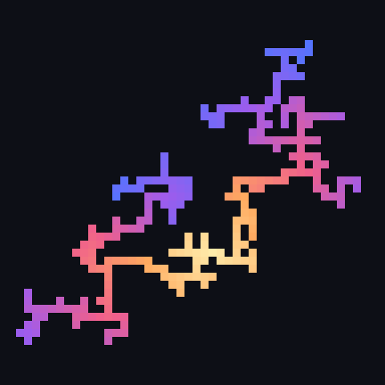
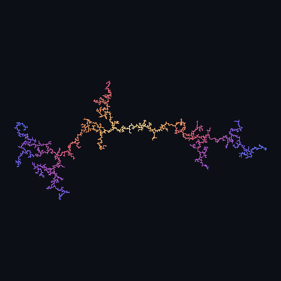
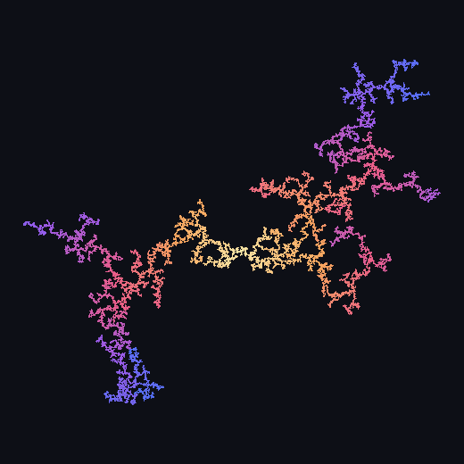
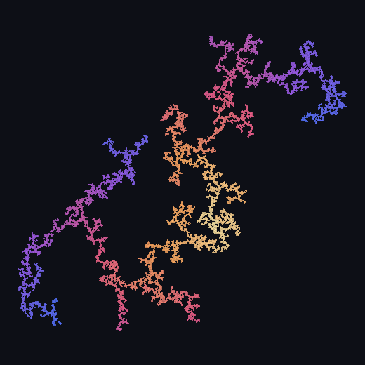
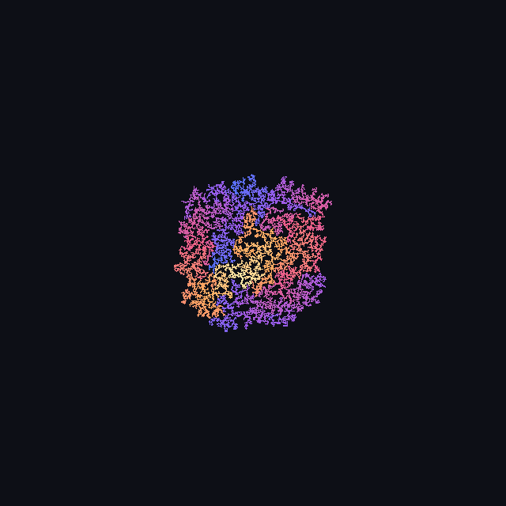
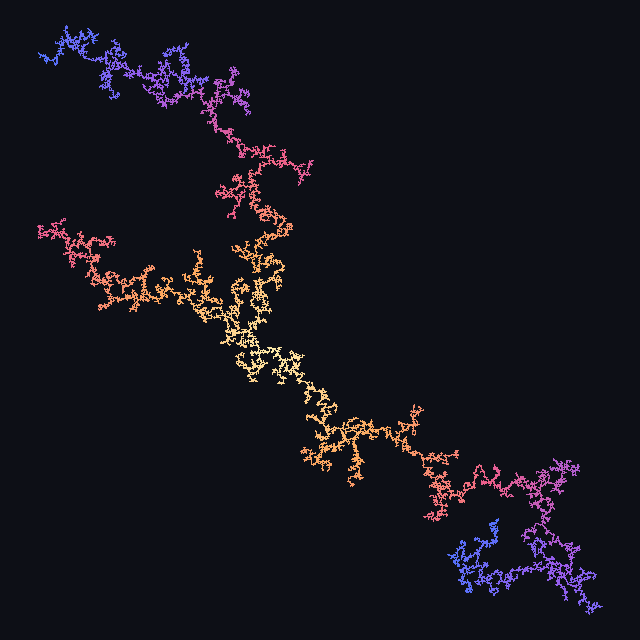

Random geometry · Markov chain Monte Carlo · older gallery →
Join 1,024,000 unit squares edge to edge. There are about 10623,406 ways to do it. The shape below is one of them, drawn so that every one of those ways was equally likely. It comes from a random walk on shapes, and most of this page is about making that walk fast enough to believe.
What “uniformly at random” picks, and why it is never a blob.
A polyomino is a set of squares on the grid that hang together along shared edges. Count two as different if they differ by a rotation or reflection (these are fixed polyominoes) and there are 19 with four cells, 63 with five, 2,725 with eight. The count keeps multiplying by about four per added cell: it grows like 0.317 × λn / n with λ ≈ 4.0626, a number known as Klarner’s constant that nobody has a formula for.
The polyominoes people draw are solid: rectangles, chunky tetris pieces. Those are a vanishing minority. A solid shape has few ways to rearrange itself, while a thin branching one has enormously many, so when every shape gets equal weight the thin branching ones win almost every draw.

250 cells

4,000 cells

64,000 cells

1,024,000 cells
How to sample from a set far too large to list.
You cannot enumerate 10623,406 shapes and pick one. You also cannot simply grow a shape cell by cell: every natural growth rule favours some shapes over others, and the favourites are blobs. The standard answer is to start from any polyomino and change it a little at random, over and over, using a rule whose long-run behaviour is known to be uniform.
The simplest such rule moves one cell at a time. Pick a cell and a place on the boundary of the shape. If taking the cell away leaves the rest in one piece, move it there. Otherwise do nothing.
If every move is exactly as likely as its reverse, the walk spends equal time on every shape.
Moving a cell from c to s and moving it back from s to c both start from the same leftover shape, so they are offered with the same probability. The walk can also reach every polyomino from every other. Together those two facts make the uniform distribution its only resting state.
This is the chain behind the gallery this project started with. It is correct. The question is how long it takes.
Relocate. One cell (dashed) moves to an empty square beside the shape. The dark cell could not be chosen: it is load-bearing.
Transplant. A whole branch is cut at a load-bearing cell c, turned over, and re-attached at another cell c′, provided it fits there touching nothing else.
Measuring how slowly the one-cell walk forgets.
A sample is only as good as the walk’s memory is short. The usual yardstick is the autocorrelation time τ: the number of moves after which some property of the shape, here its squared radius of gyration, has stopped resembling its earlier self. A run of length T is worth about T / 2τ independent samples and no more.
I measured τ for the one-cell walk on runs hundreds to thousands of τ long, at sizes from 50 to 1,600 cells. It grows like n2.6. There is a simple reason it must be at least quadratic. Each move carries one cell from a random place to a random place, so the mass of any large limb does an unbiased random walk, one cell at a time. Shifting a limb’s mass by its own size m takes about m² of its own steps, and it only gets a share m/n of the moves: m n moves in all, which is n² for the limbs that set the overall shape. The measured exponent is higher still.
Extended to 1,024,000 cells that law gives τ ≈ 1014 moves. Even at a million moves a second, which is generous at that size, that is about 24 years of computing for each independent sample.
Autocorrelation time of the squared radius, in moves, against size. Dashed lines extend each fit.
Radius of gyration against moves made, both walks from the same start.

One cell at a time · radius 136

With branch transplants · radius 433
A second kind of move that changes the overall shape in one step.
Seven cells in ten are load-bearing, which is what makes the one-cell walk slow: most cells cannot move. It is also an opportunity. Remove a load-bearing cell and a whole branch comes loose. So pick the branch up, rotate or reflect it at random, and try to plug it in at a randomly chosen cell somewhere else. If it lands on empty ground and touches the rest of the shape only at its new anchor, keep it. Otherwise put it back.
The “touches only at its anchor” condition is what keeps the move honest. It guarantees that in the new shape the branch is again exactly what comes loose when its anchor is removed, so the reverse transplant exists and is proposed with the same probability. Equal forward and backward odds, uniform resting state, as before. Mixing the two kinds of move keeps both properties, and the one-cell moves still do the work transplants cannot, such as opening and closing loops.
Cut-and-paste moves of this kind are standard for lattice trees, where Janse van Rensburg and Madras introduced them in 1992. Here the shape may contain loops and the cells have no explicit bonds, which is why the contact condition is needed.
One cell at a time
With branch transplants
Both started from the same 25 × 40 rectangle of 1,000 cells. The green band is where a uniform sample sits two times in three.
With transplants in the mix the autocorrelation time drops to about 15 moves per cell, growing like n1.0 over almost four decades of size. The perimeter, the number of holes and the elongation of the shape all relax at the same rate or faster. (One property turns out to be about 2.7 times slower; it took a deliberate search to find, below.) A walk cannot do much better than this: it has to touch every cell at least once.
A move that picks up half the shape sounds expensive, and done naively it is: finding the branch means flood-filling it. But most proposed transplants fail, and usually fail within a few cells of the anchor, because the branch’s root lands on something. So the sampler floods the branch and the neighbourhood of the new anchor in lockstep, places each branch cell as it is discovered, and stops the moment a collision with something proven to be outside the branch appears. The decision is the same one the naive version would reach; the two implementations produce bit-identical runs from the same seed. With that, the cost of a move grows only like n0.53, nearly all of it spent on the large branches that do get moved.
Put together, one independent sample costs about n1.5 of computing: about 10 minutes on one core at 1,024,000 cells.
Two measurements with known answers, and a comparison.
A sampler like this earns trust by reproducing numbers obtained in entirely different ways. Here are two that are known to high precision, and one comparison with this project’s earlier runs.
The radius of gyration should grow as nν. The best published estimate, from a different algorithm on shapes up to a few thousand cells, is ν = 0.6412 ± 0.0005. A straight-line fit to the sizes from 4,000 cells up gives ν = 0.6416 ± 0.0013.
Mean radius of gyration, in cells. Error bars are smaller than the dots.
Mean radius ÷ n0.6412. A flat line means the exponent is right.
The orange points are the sizes published in the earlier gallery, which used the one-cell walk alone. They scatter around the new curve: 5 of the 9 lie within 3% of it, and the furthest is 9% off. The radius of a single uniform sample varies by about 13% from one shape to the next, so scatter of that size is what a handful of effectively independent shapes per size would give.
Take any polyomino with n cells and add a cell on its boundary: you get one with n+1. Take one with n+1 and remove a cell that is not load-bearing: you get one with n. Those are the same set of pairs, counted from either end, so
A(n+1)A(n) = average number of empty squares bordering an n-cell shapeaverage number of removable cells in an (n+1)-cell shape
where A(n) is the number of polyominoes with n cells and both averages are over uniform samples.
The left side tends to λ. So the growth rate of a count that is known exactly only for a few dozen sizes can be read off two local statistics of a big sample. It is also a severe test: a sampler with any bias towards thin or fat shapes gets it wrong. Series analysis of exact counts gives λ = 4.0625696. Pooling the sizes from 1,000 cells up, with one extra-long run at 2,000 cells, the samples give λ = 4.0619 ± 0.0004.
⟨boundary⟩ / ⟨removable⟩, corrected for the known 1/n factor in A(n). The green line is the accepted value 4.0625696.
Everything above assumes that by the time a shape is recorded, the walk has forgotten where it started. The evidence so far is the memory of a single number, the radius. A walk can pass that test and still fail: if some other property of the shape relaxed far more slowly, every sample would be slightly atypical in a way the radius never shows. No theorem strong enough to rule this out is known for this walk (a weak one is proved below), so the claim has to be attacked from outside. Three attacks follow.
First, a way to look at a shape from many sides: 60 measurements covering its overall geometry (every moment of its mass up to sixth order, how the mass is spread radially), its fine grain (each local pattern, holes, loops) and its skeleton (which cells hold it together, how it divides at its centre, the length of its trunk, distances measured along the shape). Then three sources of shapes that involve no walk at all.
Each dot below is one measurement in one test: the walk’s average minus the reference’s, in units of the standard error of that difference. If the walk is right, the dots in a row should scatter like a bell curve of width one.
One dot per measurement. Dots beyond ±6 are drawn at the edge. Rows marked * use a reference that fails its own check.
Leaving out the starred rows, the three kinds of reference give 10 tests and 600 comparisons. 14 of them (2.3%) fall outside two standard errors, where chance alone would put about 4.6%, and the largest is 3.1. The measurements overlap, so these are not 600 independent trials, but nothing repeats: no measurement is outside two standard errors in more than 2 of the 10 tests. Against the exact clusters the comparison also covers the shape of each distribution, at its quartiles: 16 of 704 outside two standard errors, the largest 2.7. A last kind of test looks for differences that no single measurement shows. A small neural network is trained to tell the walk’s shapes from the reference’s, then scored on shapes it has not seen. Against the exact clusters it does no better than chance at any size: its best margin over a coin flip is 0.8 standard errors. (The 250-cell cluster row was first run with five chains, and one measurement stood 3.6 standard errors out. Eight more chains, with more than twice the data, did not reproduce it; the row shows all thirteen.)
The tests can see small errors. The bottom row is the walk set to p = 0.51 and compared with exact clusters at p = 0.50, a change that moves the most sensitive measurement by 0.16 of its natural spread. It is caught at 19 standard errors. The grown populations pin the uniform walk at 250 cells to within 0.4% of each measurement’s spread.
The grown populations also show what a failing sampler looks like. Their count of polyominoes comes out within 0.1% ± 0.9% of the known value at 250 cells and 0.4% ± 1.6% at 500. At 1,000 cells it is 11% low (± 4%), and at 2,000, 36% low (± 9%): by then each population descends from only a few hundred early ancestors, and its averages drift away from the walk’s (the two starred rows). The walk has a check of the same kind, Klarner’s constant above, and passes it at every size. So the starred rows say the reference failed, not the walk; but it also means that beyond 1,000 cells there is no independent reference left.
The second attack goes after the slow property directly. For each of the 60 measurements, at sizes up to 64,000 cells, how long does the walk remember it? Most are forgotten as fast as the radius or faster. One family is not: the length of the shape’s trunk, counted as the cells whose removal would split off at least 1% of the shape. It takes about 39 moves per cell to forget, against 14 for the radius.
Then a search over combinations. A standard method finds the weighted sum of all the measurements and their squares that changes most slowly along one run; its memory is then timed on a second, independent run, so that a pattern fitted to noise does not count. The slowest combinations it finds are built from the trunk again and from one other thing, the size of the largest clump of cells held together by loops. They take about 46 moves per cell.
Autocorrelation time divided by the number of cells. A flat line means the cost per independent sample grows in proportion to size.
So the worry was partly right. There is a slower property, and the honest relaxation time of this walk is about 46 moves per cell, not 15. No measured average changes, because the error bars never relied on the radius’s time: they come from the scatter of blocks at least 70 moves per cell long. What changes is the accounting. An independent sample costs about 2.7 times the figure quoted earlier. The 300 moves per cell discarded at the start of each run are about 7 relaxation times, not 20. And the 1,024,000-cell runs are about 84 relaxation times long after burn-in, not 263. Unlike the radius’s, this time is still creeping up with size, roughly as n1.13 (± 0.05) from 1,000 cells up, though the two largest sizes would also fit a time that has levelled off. If the growth continued to 1,024,000 cells it would reach about 77 moves per cell there, and the largest runs would be about 50 relaxation times long instead.
The longer runs at 1,024,000 cells allow a direct check at the largest size. The search itself cannot be repeated there (four chains of about 320 samples each are too few to search over combinations), but each measurement can be timed on its own. The slowest single measurement at the smaller sizes, the trunk, takes 32 ± 9 moves per cell there, against 41 at 16,000 and 35 at 64,000 cells. It has not lengthened. The radius takes about 8, against 14. One measurement does read longer: the size of the largest clump. Within each chain it takes 25 to 45 moves per cell, but the four chains disagree about its average by more than that allows, and timing it about their common average gives 96 ± 56. The record shows why. The largest clump grows with the shape, from about 57 cells on average at 64,000 cells to 142 at 1,024,000, and the rare very large ones last: one chain kept a clump of more than 214 cells for 168 moves per cell. Runs of this length see only a handful of such episodes, so the figure is uncertain by more than half. It is still the first direct sign of a property that slows as the shape grows. By its clock the largest runs would be about 40 relaxation times long.
The third attack starts the walk somewhere absurd: a straight bar of 16,000 cells, and a solid square. After 2,000 moves per cell both have become indistinguishable from the runs that came up the size ladder: of 60 measurements, 2 differ by more than two standard errors, the largest by 2.4, and the network cannot tell them apart. There is also a reference that costs nothing. A polyomino and its mirror image are equally likely, so 17 of the measurements must average exactly zero at every size. Across 6 sizes from 250 to 256,000 cells, 4 of the 102 averages lie outside two standard errors and the largest is 3.9. That largest one, at 64,000 cells, was put to a second test: two fresh runs at the same size, not used to find it, give the same average as +0.03 ± 0.03 of its spread, against −0.09 ± 0.02 the first time. It did not repeat. Last, 8 runs at 250 cells were started from one and the same shape with different random numbers, 4 billion moves in all. If some hidden property were stuck, their averages would differ by more than their error bars allow. The scatter between runs, relative to those error bars, is 1.06 averaged over the 60 measurements, where 1 is what correct error bars give.
That search covered 60 measurements and their combinations. A property outside the list could be slower still, and no amount of measuring the listed ones would show it. Three things can be said about the properties nobody thought to measure. One is exact, but only for small shapes. One is a measurement of the most stubborn kind of property there is. One is a proof.
With few enough cells the walk can be known completely. There are 36,446 polyominoes of 10 cells, and a run of 3 billion moves visits each of them at least 76,000 times: often enough to measure how likely every possible step from one shape to another is. The memory of any property whatever, listed or not, is a blend of the decay rates built into that table of steps, so the slowest rate in the table is a ceiling over all of them. The times below are in moves per cell.
| cells | shapes | slowest property of all | slowest the search finds | share it captures |
|---|---|---|---|---|
| 4 | 19 | 3.68 | 3.68 | 100% |
| 5 | 63 | 4.79 | 4.79 | 100% |
| 6 | 216 | 6.96 | 6.92 | 99.8% |
| 7 | 760 | 7.54 | 7.43 | 99.6% |
| 8 | 2,725 | 9.68 | 9.40 | 99.2% |
| 9 | 9,910 | 9.64 | 9.32 | 98.9% |
| 10 | 36,446 | 11.61 | 11.09 | 98.6% |
At these sizes the slowest property of all is the direction in which the shape is stretched, along the grid’s rows or along its columns, and the measurements already contain at least 98.6% of it (the last column). The best combination of the measurements comes within 4% of the true slowest time at every size. Two separate runs at 9 cells give the slowest time to within 0.03% of each other. So where the full answer can be known, the search was not missing anything. That is evidence about the method, not about a million cells, where the slowest thing found is a different one, the trunk.
Some properties are slow by construction. “Is this particular cell where it started?” cannot be forgotten until that cell has moved. “Is this twig of forty cells still in one piece?” cannot be forgotten until something breaks it. No average over the shape sees such things, but they can be tracked directly, because the program keeps each cell’s identity as it moves. Compare a shape with the one it started from, and find the largest group of cells that still sit in the same arrangement relative to one another. That is the largest piece of the start that survives intact, wherever it has been carried.
Cells in the piece, against moves made per cell. Lines are the median over several runs from an equilibrated start (one run at 256,000 cells). The band is what two unrelated shapes give by coincidence.
After 5 moves per cell the largest surviving piece is still 43 to 68% of the shape. After 100 it is under 0.8%. Somewhere between 95 and 405 moves per cell, at 16,000, 64,000 and 256,000 cells, it is down to a dozen cells, and soon after to the 2 to 4 that coincidence gives. At 1,024,000 cells, measured between snapshots of the long runs: after 150 moves per cell, 181 to 3,218 cells (at most 0.31% of the shape); after 300 moves per cell, 28 to 162 cells; after 450 moves per cell, 6 to 12 cells; after 600 moves per cell, 3 to 4 cells.
This is the clock for forgetting everything at once, as opposed to forgetting any one average, and it runs a few times slower: a few hundred moves per cell against 46. It also has to lengthen slowly with size, since the last untouched cell out of a million holds out longer than the last out of a thousand. Every run throws away at least its first 300 moves per cell, which is about the scale of this clock and not only of the radius’s.
Neither of those is a guarantee at a million cells. What can be proved is modest. As far as a short search of the literature shows, it is also new.
Theorem. For the walk that moves one cell at a time on polyominoes of n cells, every property of the shape is forgotten within 4 n5 (L + 1)2 (2n + 2)6L moves, where L = 2 log2 n + 4. The sampler on this page, which mixes that walk with transplants, obeys the same bound times n2/0.6.
“Forgotten” has the meaning used throughout this page: the autocorrelation time of the property, the number of moves that buys one independent reading of it. What the theorem excludes is a bottleneck. There are about 4.06n polyominoes of n cells, and a walk can have whole regions of shapes that it enters and leaves only through a narrow door; finding the door can then take a time that also grows like a number to the power n, and some property (which side of the door am I on?) is remembered for that long. The theorem’s bound grows like n to the power 12 log2 n. That is faster than any fixed power of n, but nowhere near exponential. At 1,024,000 cells there are about 10623,406 shapes, and the bound is about 101,710 moves.
The argument gives every pair of shapes A and B a route from one to the other and shows that no single step is used by too many routes, which is the opposite of a narrow door. The route builds B beside A one cell at a time, each new cell taken from A. Cells leave A in an order that keeps the rest of A connected, and join B in an order that keeps the built part connected. Partway along, the shape is part of A joined to part of B. How many routes pass through that one shape? As many as there are ways to fill in what is missing: the rest of A and the rest of B. The order of the cells is chosen (walk the shape branch by branch, always leaving the largest branch for last) so that each missing part is at most L connected pieces. A 1967 inequality of Klarner, that there are at least as many polyominoes of a + b cells as pairs of polyominoes of a and of b cells, then bounds the number of fillings by the number of polyominoes times a power of n proportional to L. A standard theorem of Sinclair converts that count into the bound.
The limits of this should be plain. As a number the bound is useless: the largest run here is about 1010 moves long. It excludes exponentially slow properties and nothing else; a property that took n3 moves to forget would be compatible with it and would ruin these samples. The combinatorial steps are checked by machine for every pair of shapes up to 7 cells, where the bound can also be compared with the exact answer, but nobody else has read the proof. It is written out in full in the repository.
Code, validation scripts and the data behind every chart are in AdamScherlis/manyomino.